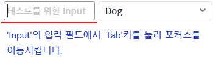
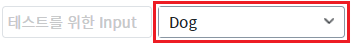
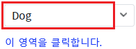
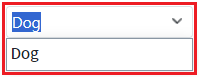
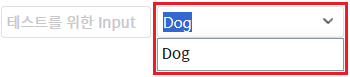

속성 'editModeEvent'의 설정 값 비교 예제입니다. 이 속성은 편집 모드 전환이 발생하는 이벤트를 설정할 수 있습니다.
설정 값에 따른 동작은 다음과 같습니다.
"onclick" : [default] onclick 이벤트 발생 시 편집 모드로 전환.
"onfocus" : onfocus 이벤트 발생 시 편집 모드로 전환. (컴포넌트가 클릭된 경우도 포함)
이벤트 'onclick' 발생 시 편집 모드 전환
이벤트 'onfocus' 발생 시 편집 모드 전환
STEP 1. 초기 상태 확인하기
영역 [(기본 설정) 이벤트 'onclick' 발생 시 편집 모드 전환]에 구성된 예제를 확인합니다.
좌측으로 'Input'이 있고 우측에 'AutoComplete'이 구성되어 있습니다.
'Input'은 'AutoComplete'가 포커스되었을 때의 동작을 확인하기 위해 구성되었습니다.STEP 2. 포커스되었을 때 편집 모드 전환 여부 확인하기
좌측에 구성된 'Input'을 클릭하여 커서를 위치시킵니다. 그 다음 'Tab'키를 눌러 'AutoComplete'으로 포커스를 이동시킵니다.
그림 1.브라우저(Chrome) 실행 예시

STEP 3. 실행 결과를 확인합니다.
'AutoComplete'으로 포커스가 되고 편집 모드로 전환되지 않습니다.
그림 2.브라우저(Chrome) 실행 예시

STEP 4. 클릭되었을 때 편집 모드 전환 여부 확인하기
'AutoComplete'을 클릭합니다. 우측에 구성된 버튼을 클릭하면 목록이 표시됩니다. 버튼을 제외한 컴포넌트 영역을 클릭합니다.
그림 3.브라우저(Chrome) 실행 예시

STEP 5. 실행 결과를 확인합니다.
'AutoComplete'으로 포커스가 되고 편집 모드로 전환되며, 입력 필드에 입력된 값으로 필터되어 목록이 표시됩니다.
그림 4.브라우저(Chrome) 실행 예시

STEP 1. 초기 상태 확인하기
영역 [이벤트 'onfocus' 발생 시 편집 모드 전환]에 구성된 예제를 확인합니다.
좌측으로 'Input'이 있고 우측에 'AutoComplete'이 구성되어 있습니다.
'Input'은 'AutoComplete'가 포커스되었을 때의 동작을 확인하기 위해 구성되었습니다.STEP 2. 포커스되었을 때 편집 모드 전환 여부 확인하기
좌측에 구성된 'Input'을 클릭하여 커서를 위치시킵니다. 그 다음 'Tab'키를 눌러 'AutoComplete'으로 포커스를 이동시킵니다.
그림 5.브라우저(Chrome) 실행 예시
STEP 3. 실행 결과를 확인합니다.
'AutoComplete'으로 포커스가 되고 편집 모드로 전환되며, 입력 필드에 입력된 값으로 필터되어 목록이 표시됩니다.
그림 6.브라우저(Chrome) 실행 예시

STEP 4. 클릭되었을 때 편집 모드 전환 여부 확인하기
'AutoComplete'을 클릭합니다. 우측에 구성된 버튼을 클릭하면 목록이 표시됩니다. 버튼을 제외한 컴포넌트 영역을 클릭합니다.
그림 7.브라우저(Chrome) 실행 예시
STEP 5. 실행 결과를 확인합니다.
'AutoComplete'으로 포커스가 되고 편집 모드로 전환되며, 입력 필드에 입력된 값으로 필터되어 목록이 표시됩니다.
그림 8.브라우저(Chrome) 실행 예시
속성을 정의합니다.
[필수] editModeEvent="옵션 값"
제시된 옵션 값으로 설정합니다.
(옵션 값)
- "onclick" : [default] onclick 이벤트 발생 시 편집 모드로 전환.
- "onfocus" : onfocus 이벤트 발생 시 편집 모드로 전환.(컴포넌트가 클릭된 경우도 포함)
editModeEvent